Module 3: RNA Expression and Differential Expression
Module 3 - Learning objectives
By the end of this module, you should be able to:
- explain what the goal of DGE analysis is
- understand the steps in a DGE analysis
- be aware of the impact that tool choices can have on the results
- interpret DGE visualizations
- perform a DGE analysis with DESeq2
Module 3 - Practical Exercise: Differential Gene Expression (DGE) analysis Lab
For the next two modules, we will use the data set (GSE114360) [https://ncbi.nlm.nih.gov/geo/query/acc.cgi?acc=GSE114360] which is an RNA transcriptome sequencing analysis of MKN45 (human gastric cancer cell line) cells transfected with tcons_00001221 shRNA or control shRNA.
First step is to load the required R packages and read the data. For the data, we are using the raw counts table provided at the NCBI.
library(data.table)
library(ggplot2)
library(DESeq2)
#Indicate where the data is available
url <- "https://www.ncbi.nlm.nih.gov/geo/download/?type=rnaseq_counts&acc=GSE114360&format=file&file=GSE114360_raw_counts_GRCh38.p13_NCBI.tsv.gz"
#Get the data
raw_counts <- fread(url)
# convert the data.table to matrix format
raw_counts = as.matrix(raw_counts)
# check what type of object is the variable raw_counts
class(raw_counts)## [1] "matrix" "array"# set the gene ID values to be the row names for the matrix
rownames(raw_counts) = raw_counts[, "GeneID"]
# now that the gene IDs are the row names, remove the redundant column that contains them
raw_counts = raw_counts[, colnames(raw_counts) != "GeneID"]
# convert the count values from strings (with spaces) to integers, because originally the gene column contained characters, the entire matrix was set to character
class(raw_counts) = "integer"
# create a simple one column dataframe with the group ID
metaData <- data.frame("Condition" = c("shRNA", "shRNA", "shRNA", "CTRL", "CTRL", "CTRL"))
# convert the "Condition" column to a factor data type
# the alphabetical order of these factors will determine the direction of log2 fold-changes for the genes (i.e. up or down regulated)
metaData$Condition = factor(metaData$Condition, levels = c("CTRL", "shRNA"))
# set the row names of the metaData dataframe to be the names of our sample replicates from the read counts matrix
rownames(metaData) = colnames(raw_counts)
# check the data
str(raw_counts)## int [1:39376, 1:6] 11 250 5 0 0 1 0 13 57 1 ...
## - attr(*, "dimnames")=List of 2
## ..$ : chr [1:39376] "100287102" "653635" "102466751" "107985730" ...
## ..$ : chr [1:6] "GSM3140455" "GSM3140456" "GSM3140457" "GSM3140458" ...## GSM3140455 GSM3140456 GSM3140457 GSM3140458 GSM3140459 GSM3140460
## 100287102 11 9 10 8 5 7
## 653635 250 340 409 249 215 299
## 102466751 5 8 6 9 5 6
## 107985730 0 0 0 0 0 0
## 100302278 0 0 0 0 0 0
## 645520 1 2 2 2 1 0## GSM3140455 GSM3140456 GSM3140457 GSM3140458
## Min. : 0.0 Min. : 0.0 Min. : 0.0 Min. : 0
## 1st Qu.: 0.0 1st Qu.: 0.0 1st Qu.: 0.0 1st Qu.: 0
## Median : 1.0 Median : 2.0 Median : 2.0 Median : 1
## Mean : 330.2 Mean : 467.2 Mean : 534.4 Mean : 341
## 3rd Qu.: 136.0 3rd Qu.: 191.0 3rd Qu.: 221.0 3rd Qu.: 132
## Max. :175754.0 Max. :251373.0 Max. :280891.0 Max. :189790
## GSM3140459 GSM3140460
## Min. : 0.0 Min. : 0.0
## 1st Qu.: 0.0 1st Qu.: 0.0
## Median : 1.0 Median : 1.0
## Mean : 308.9 Mean : 381.5
## 3rd Qu.: 120.0 3rd Qu.: 147.0
## Max. :168920.0 Max. :209742.0## [1] 39376 6# check that names of htseq count columns match the names of the meta data rows
# use the "all" function which tests whether an entire logical vector is TRUE
all(rownames(metaData) == colnames(raw_counts))## [1] TRUELook at the R output generated by the previous commands and answer the following questions:
- How many features (genes) are in the raw counts table?
- How many reads were mapped (at most) to each gene in the 50% of the genes with the least expression?
- What’s the maximum number of reads mapped to a single gene?
- What’s the average number of reads mapped to genes in sample
GSM3140457?
# Now let's create a DESeqDataSet
dds <- DESeqDataSetFromMatrix(raw_counts, colData= metaData, design = ~Condition)
# In the design above we could create more complex experimental designs; for example, if we had a
# two factor experiment where the other factor was sex we could then define
# design = ~condition+sex. Note that the sex info must be a column in the metaData; otherwise, one
# gets the error "all variables in design formula must be columns in colData"
# Let's check our dds object
dds## class: DESeqDataSet
## dim: 39376 6
## metadata(1): version
## assays(1): counts
## rownames(39376): 100287102 653635 ... 4576 4571
## rowData names(0):
## colnames(6): GSM3140455 GSM3140456 ... GSM3140459 GSM3140460
## colData names(1): Condition# Let's filter low expressed genes. Since each group has 3 replicates, we will require that genes have at least 10 reads in at least 3 samples. [Remember: this step is not strictly required and 10 is and arbitrary (but reasonable) cut-off value]
smallestGroupSize <- 3
#Here we are counting the columns per row with at least 10 reads. If there are at least 3 columns, the row for that gene will be TRUE and we will keep it
keep <- rowSums(counts(dds) >= 10) >= smallestGroupSize
dds <- dds[keep,]
dim(dds)## [1] 15808 6- How many genes were removed because of low expression?
The easiest way to perform DESeq2’s default DEG analysis is using the function DESeq, which we are going to use later. This function estimates the scaling factors and the dispersion (both are used for normalizing the data), fits a Negative Binomial Generalized Linear Model (GLM) and performs a Wald statistical test.
However, we are going to explore some of these steps individually so you can see what is happening.
## GSM3140455 GSM3140456 GSM3140457 GSM3140458 GSM3140459 GSM3140460
## 0.8694024 1.2231823 1.4104365 0.8734080 0.7922870 0.9738521# Normalize the data using the scaling factors
normalized_counts <- counts(ddsSF, normalized=TRUE)
#### QUALITY CONTROL
### Transform counts for data visualization
rld <- rlog(ddsSF, blind=TRUE)
plotPCA(rld, intgroup="Condition")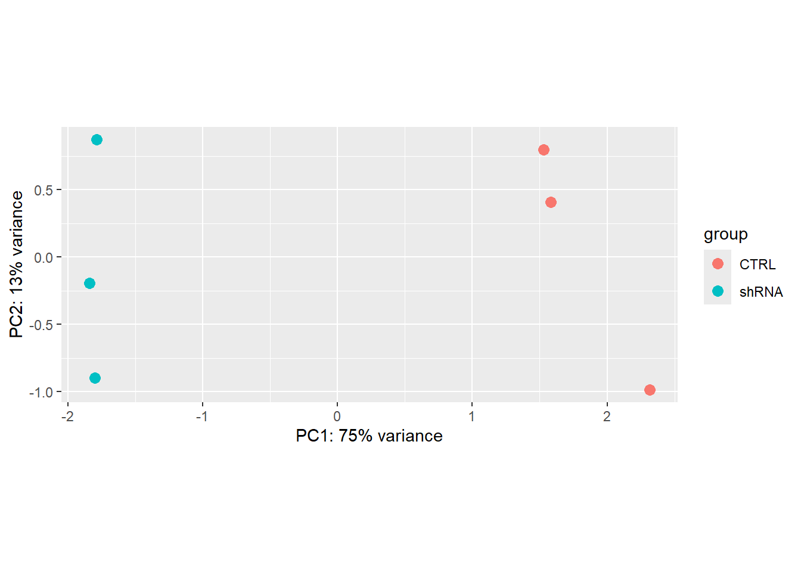
### Extract the rlog matrix from the object
rld_mat <- assay(rld)
### Compute pairwise correlation values
rld_cor <- cor(rld_mat)
rld_cor## GSM3140455 GSM3140456 GSM3140457 GSM3140458 GSM3140459 GSM3140460
## GSM3140455 1.0000000 0.9998818 0.9998504 0.9997608 0.9997614 0.9996248
## GSM3140456 0.9998818 1.0000000 0.9998497 0.9997637 0.9997413 0.9996578
## GSM3140457 0.9998504 0.9998497 1.0000000 0.9997358 0.9997497 0.9996662
## GSM3140458 0.9997608 0.9997637 0.9997358 1.0000000 0.9998883 0.9998151
## GSM3140459 0.9997614 0.9997413 0.9997497 0.9998883 1.0000000 0.9997967
## GSM3140460 0.9996248 0.9996578 0.9996662 0.9998151 0.9997967 1.0000000Based on the PCA plot, would you expect to find differentially expressed genes (DEGs) between the groups shRNA vs Control? Why?
Based on the correlation values between samples, would you conclude that the assumption about the expression levels of most genes remained the same across groups is correct for these data? Why?
DGE Analysis
## [1] "Intercept" "Condition_shRNA_vs_CTRL"#Extract the results for the contrast (coefficient) we are interested
resDefault <- results(ddsDefault,c("Condition","CTRL","shRNA"))
resDefault## log2 fold change (MLE): Condition CTRL vs shRNA
## Wald test p-value: Condition CTRL vs shRNA
## DataFrame with 15808 rows and 6 columns
## baseMean log2FoldChange lfcSE stat pvalue
## <numeric> <numeric> <numeric> <numeric> <numeric>
## 653635 286.4972 0.016579878 0.102092 0.16240212 0.870989
## 100996442 14.9271 -0.299139561 0.425980 -0.70223830 0.482531
## 729737 64.5801 -0.074783319 0.204430 -0.36581464 0.714503
## 102723897 175.8036 0.000938435 0.126382 0.00742536 0.994075
## 112268260 19.6028 -0.151078481 0.369294 -0.40910086 0.682466
## ... ... ... ... ... ...
## 4541 7347.3741 -0.137380 0.0385010 -3.56822 0.000359414
## 4556 1156.8423 -0.328717 0.1219864 -2.69470 0.007045128
## 4519 12059.7646 -0.134310 0.0417595 -3.21628 0.001298645
## 4576 63.3893 -0.336712 0.2107150 -1.59795 0.110054267
## 4571 1409.7675 -0.107690 0.0624218 -1.72520 0.084491942
## padj
## <numeric>
## 653635 0.967463
## 100996442 NA
## 729737 NA
## 102723897 0.999627
## 112268260 NA
## ... ...
## 4541 0.00959379
## 4556 0.08384600
## 4519 0.02467646
## 4576 NA
## 4571 0.38490496# Let's look at the dispersion of the mean of the normalized counts. What we are looking for here
# is that the blue dots are closer to the red line than the black dots, and we expect the
# dispersion to decrease as the mean of normalized counts increases for each gene.
plotDispEsts(ddsDefault)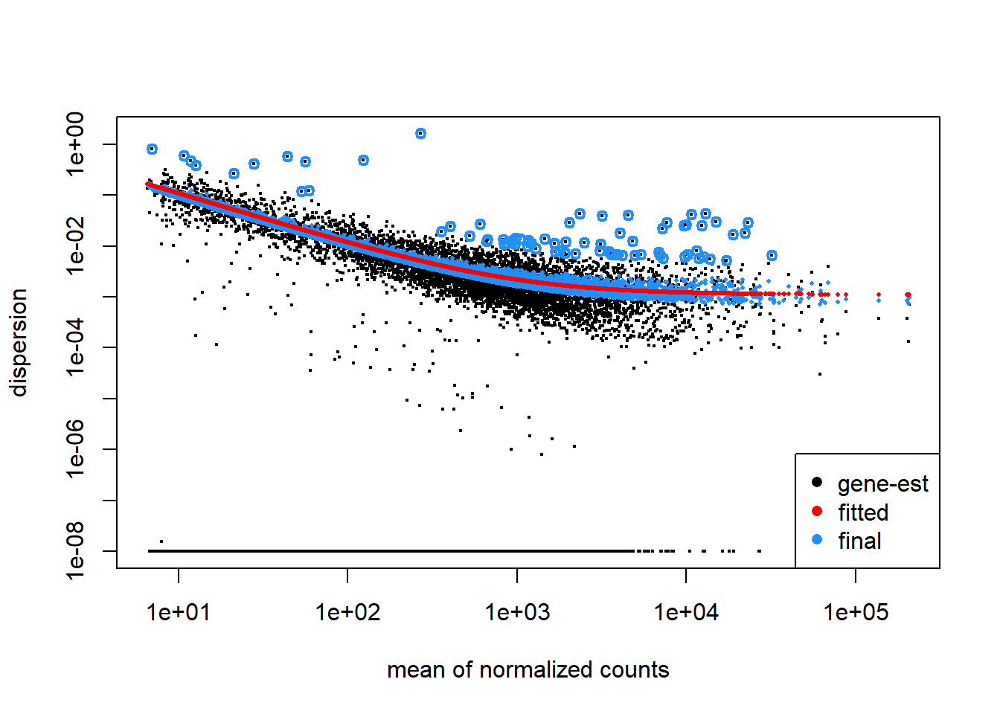
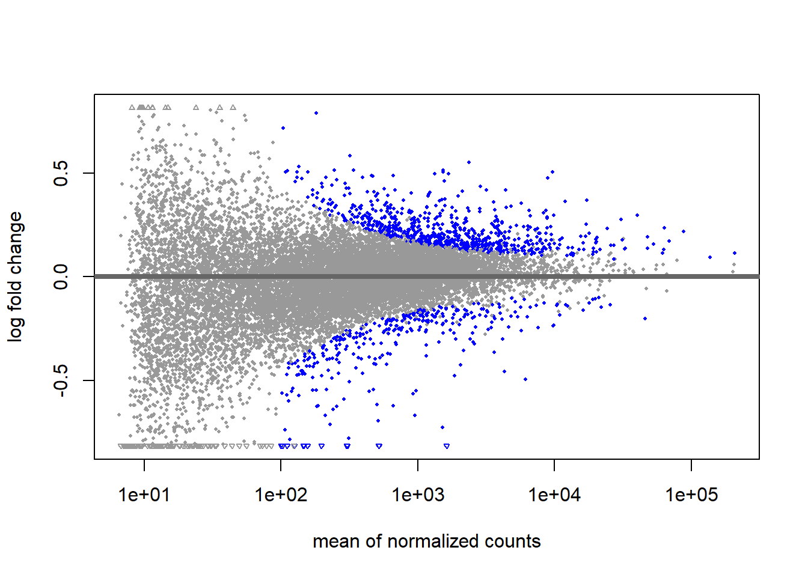
Interpret the MA plot.
# Let's try alternative approaches for estimating dispersion
ddsLoc <- DESeq(dds, fitType="local")
resLoc <- results(ddsLoc,c("Condition","CTRL","shRNA"))
ddsMean <- DESeq(dds, fitType="mean")
resMean <- results(ddsMean,c("Condition","CTRL","shRNA"))
#Let's visualize the effect of applying different dispersion estimators
par(mfrow=c(1,2))
xlim <- c(1,1e5); ylim <- c(-1.5,1.5)
plotDispEsts(ddsDefault)
plotMA(resDefault, xlim=xlim, ylim=ylim, main="parametric (default")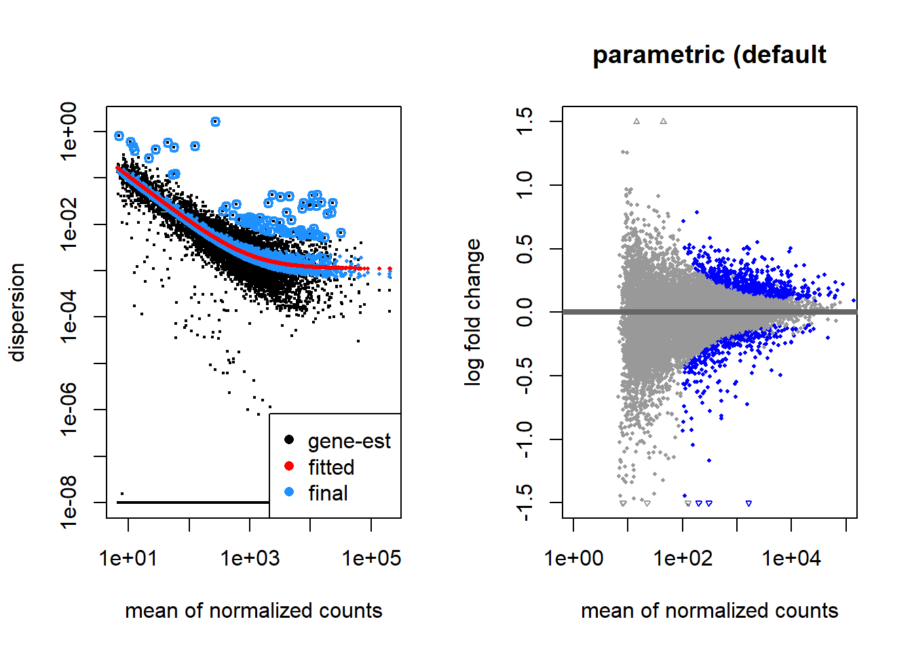
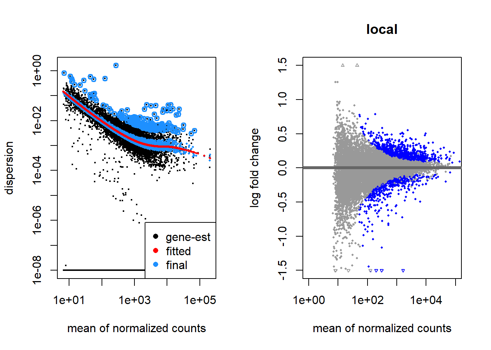
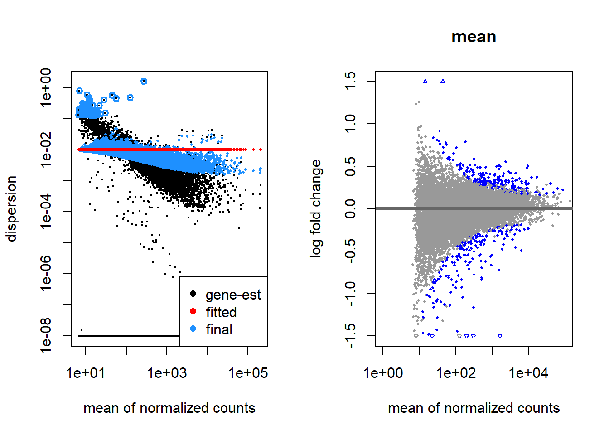
- Which dispersion estimator method would you say work best for these data? Why?
Exercise
Another argument that can be changed in the DESeq function controls how the scaling factors are calculated. The scaling factor calculation method is set with the argument sfType. Look at the help for this function (by typing ?DESeq in the R console) and try one of the alternative approaches, and generate the corresponding MA-plot which should look like one of the plots below. Compare these MA-plots with the MA-plot obtained with the default values. Which method would you expect to deem more genes as differentially expressed?
ddsPos <- DESeq(dds, sfType="poscounts")
resPos <- results(ddsPos,c("Condition","CTRL","shRNA"))
plotMA(resPos, xlim=xlim, ylim=ylim, main="poscounts")
ddsIt <- DESeq(dds, sfType="iterate")
resIt <- results(ddsIt,c("Condition","CTRL","shRNA"))
plotMA(resIt, xlim=xlim, ylim=ylim, main="iterate")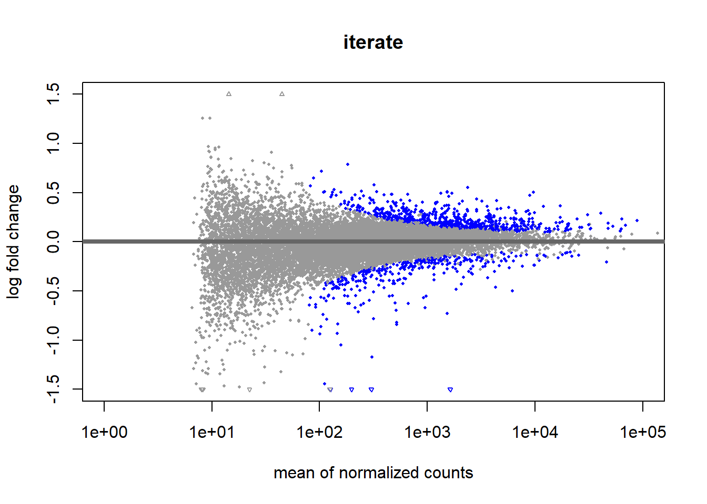
Obtain the DEGs
Let’s first see how methodological choices change the results.
##
## out of 15808 with nonzero total read count
## adjusted p-value < 0.1
## LFC > 0 (up) : 702, 4.4%
## LFC < 0 (down) : 324, 2%
## outliers [1] : 0, 0%
## low counts [2] : 4597, 29%
## (mean count < 93)
## [1] see 'cooksCutoff' argument of ?results
## [2] see 'independentFiltering' argument of ?results## [1] 426##
## out of 15808 with nonzero total read count
## adjusted p-value < 0.1
## LFC > 0 (up) : 223, 1.4%
## LFC < 0 (down) : 182, 1.2%
## outliers [1] : 0, 0%
## low counts [2] : 307, 1.9%
## (mean count < 10)
## [1] see 'cooksCutoff' argument of ?results
## [2] see 'independentFiltering' argument of ?results## [1] 169##
## out of 15808 with nonzero total read count
## adjusted p-value < 0.1
## LFC > 0 (up) : 650, 4.1%
## LFC < 0 (down) : 332, 2.1%
## outliers [1] : 0, 0%
## low counts [2] : 4291, 27%
## (mean count < 80)
## [1] see 'cooksCutoff' argument of ?results
## [2] see 'independentFiltering' argument of ?results## [1] 421- Which method reports a higher number of DEGs? Which method would you say is more conservative?
Let’s find out the genes with an adjusted pvalue < 0.01 in common to all three methods.
resDefault_Sig <- subset(resDefault, padj < 0.01)
resMean_Sig <- subset(resMean, padj < 0.01)
resIt_Sig <- subset(resIt, padj < 0.01)
GenesInCommon <- intersect(intersect(row.names(resDefault_Sig), row.names(resMean_Sig)),row.names(resIt_Sig))
library(ggVennDiagram)## Warning: package 'ggVennDiagram' was built under R version 4.4.3lst4Venn <- list(Default = row.names(resDefault_Sig), Mean = row.names(resMean_Sig), Iterate = row.names(resIt_Sig))
ggVennDiagram(lst4Venn)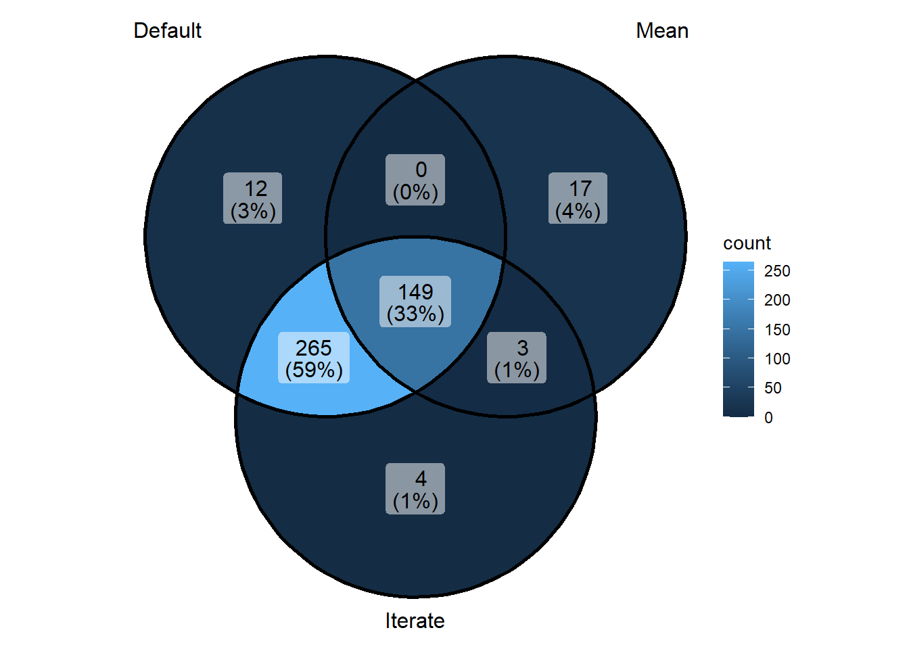
- Which genes would you consider the most likely to be truly differentially expressed between the two groups? Why?
Let’s create some visualizations and save the results into a csv file.
# Let's create a heatmap with the DEGs in the intersection between the three approaches based on normalized counts
library(pheatmap)## Warning: package 'pheatmap' was built under R version 4.4.3### Generate a HeatMap using the metadata data for the sample annotation
pheatmap(rld_mat[GenesInCommon,],
cluster_rows = T,
cluster_cols = F,
show_rownames = F,
annotation = metaData,
border_color = NA,
fontsize = 10
)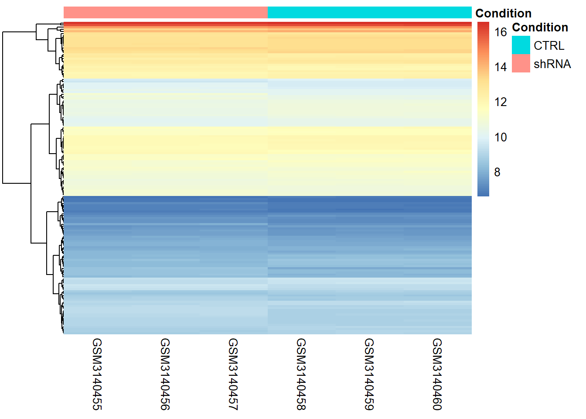
#Z-score normalization is used to highlight relative expression patterns across samples, rather than absolute expression levels, making it easier to compare gene behavior.
# Compute Z-score per gene (row-wise scaling)
rld_mat_z <- t(scale(t(rld_mat[GenesInCommon, ])))
# Generate heatmap
pheatmap(rld_mat_z,
cluster_rows = TRUE,
cluster_cols = FALSE,
show_rownames = FALSE,
annotation_col = metaData,
border_color = NA,
fontsize = 10
)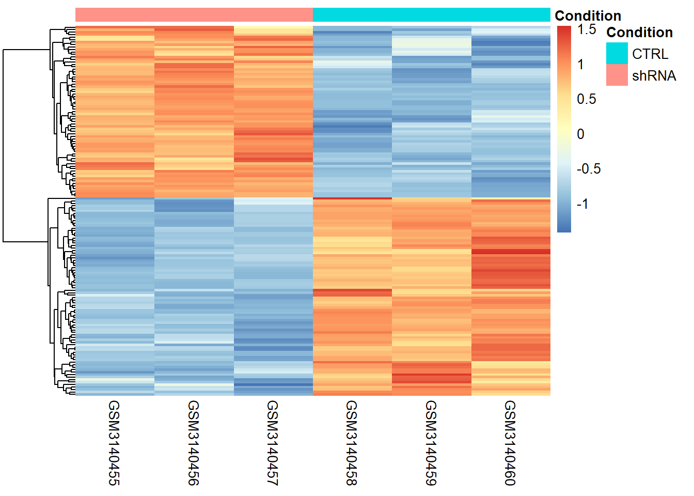
#Plot the counts for the most significant DEG
mostSignificantDEG <- which.min(resDefault$padj)
plotCounts(ddsDefault, gene=mostSignificantDEG, intgroup="Condition")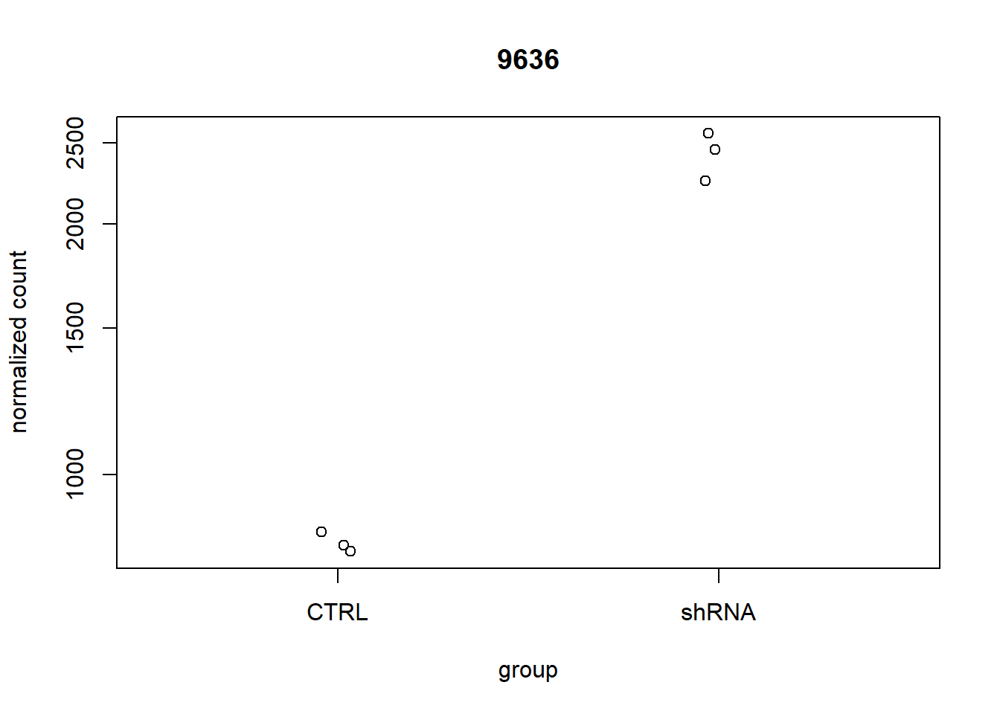
## log2 fold change (MLE): Condition CTRL vs shRNA
## Wald test p-value: Condition CTRL vs shRNA
## DataFrame with 1 row and 6 columns
## baseMean log2FoldChange lfcSE stat pvalue padj
## <numeric> <numeric> <numeric> <numeric> <numeric> <numeric>
## 9636 1627.18 -1.54932 0.0623475 -24.8498 2.59935e-136 2.91414e-132## GSM3140455 GSM3140456 GSM3140457 GSM3140458 GSM3140459 GSM3140460
## 2136 3140 3180 745 641 801#Create a volcano plot
threshold_DE <- resDefault$padj < 0.01
ggplot(resDefault) +
geom_point(aes(x = log2FoldChange, y = -log10(padj), colour = threshold_DE)) +
ggtitle("Volcano Plot") +
xlab("log2 fold change") +
ylab("-log10 adjusted p-value") +
theme(legend.position = "none")## Warning: Removed 4597 rows containing missing values or values outside the scale
## range (`geom_point()`).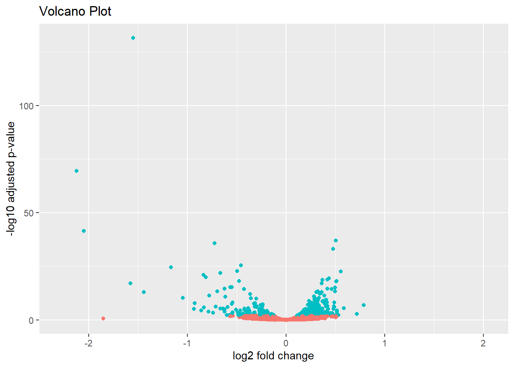
#Order the genes by the adjusted pvalue
resOrdered <- resDefault[order(resDefault$padj),]
resOrdered[1:10,]## log2 fold change (MLE): Condition CTRL vs shRNA
## Wald test p-value: Condition CTRL vs shRNA
## DataFrame with 10 rows and 6 columns
## baseMean log2FoldChange lfcSE stat pvalue padj
## <numeric> <numeric> <numeric> <numeric> <numeric> <numeric>
## 9636 1627.182 -1.549323 0.0623475 -24.8498 2.59935e-136 2.91414e-132
## 8638 301.312 -2.125520 0.1168699 -18.1871 6.53533e-74 3.66338e-70
## 3433 196.996 -2.049771 0.1444748 -14.1877 1.09109e-45 4.07741e-42
## 6526 9657.618 0.505505 0.0376453 13.4281 4.13890e-41 1.16003e-37
## 29968 1523.671 -0.727025 0.0550128 -13.2156 7.13498e-40 1.59981e-36
## 960 8935.942 0.475459 0.0373903 12.7161 4.81339e-37 8.99382e-34
## 16 4286.422 -0.456685 0.0406714 -11.2286 2.94974e-29 4.72421e-26
## 55601 306.091 -1.166797 0.1057287 -11.0358 2.56843e-28 3.59934e-25
## 7803 6158.634 -0.496378 0.0465410 -10.6654 1.47751e-26 1.84048e-23
## 6659 2370.681 0.552975 0.0521128 10.6111 2.64565e-26 2.96604e-23## [1] "mean of normalized counts for all samples"
## [2] "log2 fold change (MLE): Condition CTRL vs shRNA"
## [3] "standard error: Condition CTRL vs shRNA"
## [4] "Wald statistic: Condition CTRL vs shRNA"
## [5] "Wald test p-value: Condition CTRL vs shRNA"
## [6] "BH adjusted p-values"#Let's save the complete results
write.csv(as.data.frame(resOrdered), file="DGE_analysis_results.csv")- Can you locate in the volcano plot the gene with the lowest adjusted p-value?
- How many of the top 10 most significant genes are down in the CTRL condition?
DESeq2 resources
The DESeq2 bioconductor vignette is a great resource to dive deeper into DESeq2’s functionality.